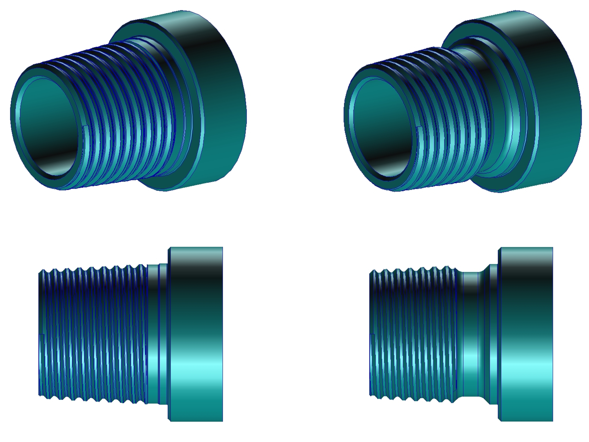

Truong Tho Nguyen >> Projects with Industry
 Project: Analysis of a (drilling) sub gap where a stress relief groove is added to resist stress concentrations at the tooth's roots of the male sub. (continued from this project)
Project: Analysis of a (drilling) sub gap where a stress relief groove is added to resist stress concentrations at the tooth's roots of the male sub. (continued from this project)
Date: May 2012
Partner: Pete Leaney, National Oilwell Varco Downhole (Eurasia) Ltd.
Description of problem:
Following the analysis of the mutual project, high stress concentration is found at one of the tooth's roots of the male sub thread. A stress relief groove is therefore proposed with intension of spreading out the stress. A numerical analysis is needed to check whether the groove can improve the stiffness of the whole sub gap in the same working condition or not (here is bending).
Solution:
...
Figures:
Stress relief groove (right) on Male sub compared with the sub without groove in previous project (left).
Last updated: 02/05/2012